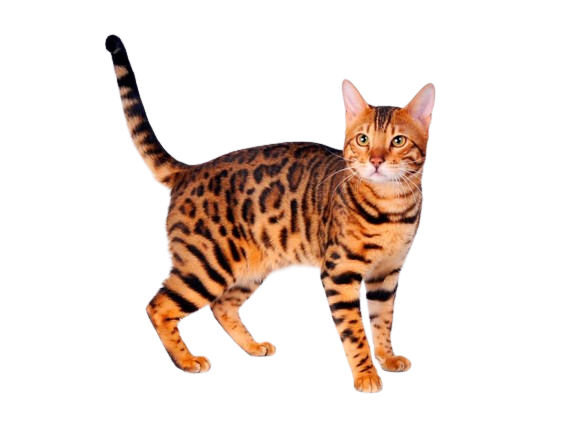
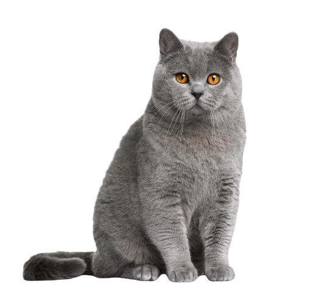
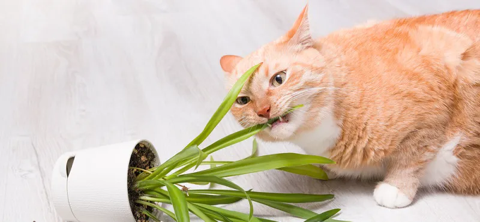
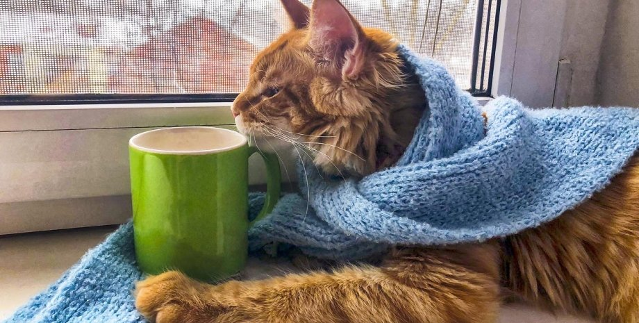
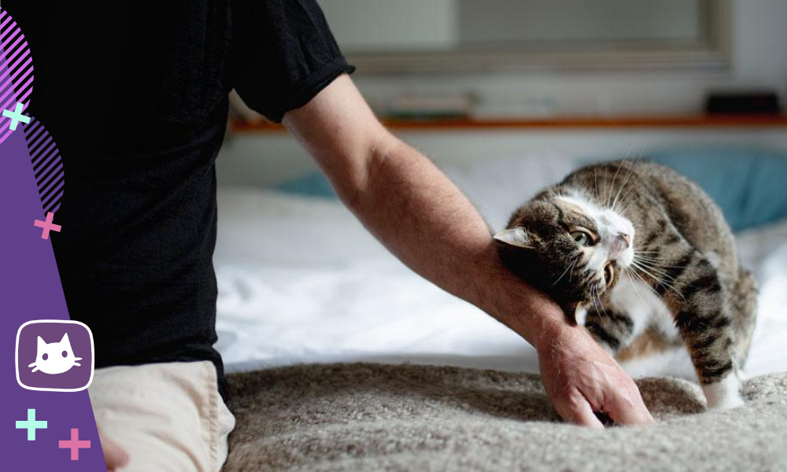
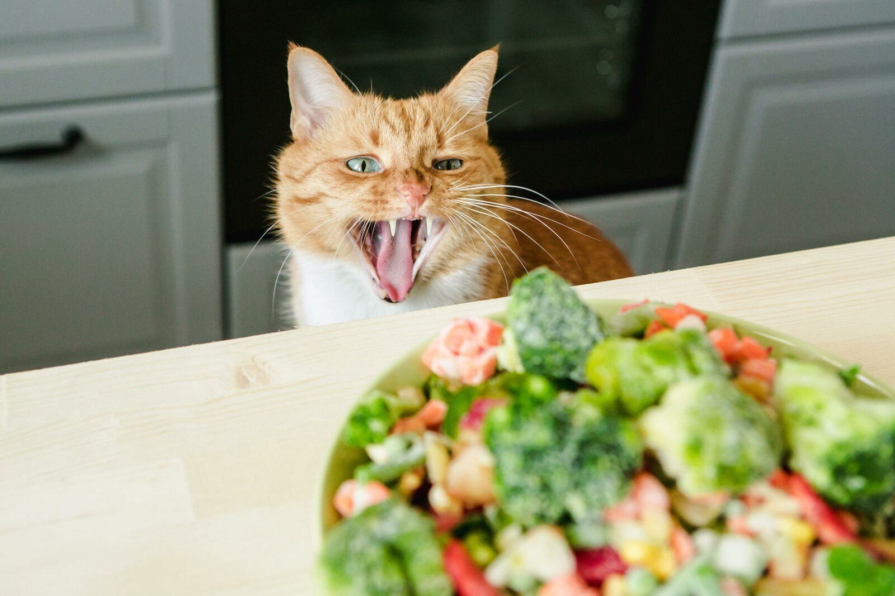
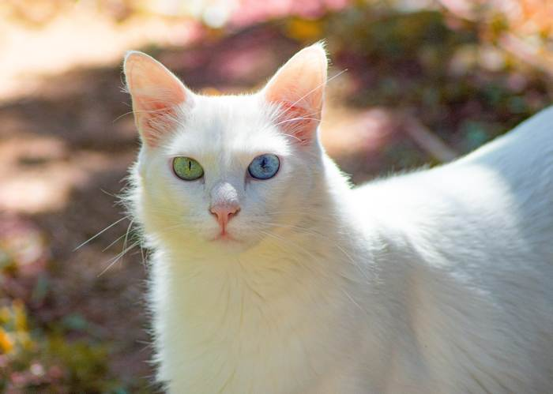

Породы кошек

Абиссинская

Бенгальская

Британская короткошёрстная

Сфинкс
О котенке

Когда и почему у котят меняется цвет глаз?
У всех новорожденных котят цвет глаз голубой, но со временем он меняется. В каком возрасте..

Как приучить котенка к лотку
Один из первых вопросов, который встает перед новоиспеченным владельцем – как приучить..

Этапы развития котят
Развитие котят во многом зависит не только от мамы-кошки, но и от владельца. На каждом этапе..
Здоровье кошек

График вакцинации кошек
Каждой кошке, коту и котенку необходима вакцинация против инфекционных заболеваний. График вакцинаци..

Ядовитые для кошек растения и комнатные цветы
Задача ответственных владельцев животных-компаньонов — следить за тем, чтобы их дома были безопасным..

Сколько групп крови у кошек и какие существуют?
Чем дальше развивается ветеринарная медицина, тем больше удивляются многие владельцы схожести людей..
Поведение кошек

Почему британские кошки злые?
Поведение кошки связано как с породными особенностями, так и является следствием..

Почему кошки часто умываются?
Кошачьих поистине считают настоящими чистюлями животного мира, поскольку почти..

Почему кошки бодаются головой?
Темперамент разных любимцев настолько отличается, что у одного владельца при одинаковом воспитании..
Питание кошек

Какие овощи можно кошкам и что давать опасно?
Кошки — это истинные, облигатные хищники, но это не значит, что в их рационе не может быть ничего, к..

Можно ли котятам молоко?
Кормление животных на самом деле – непростое дело, если подходить к вопросу грамотно и ответственно,..

Какую крупу можно кошкам и какую нельзя?
Кошки — это строгие хищники, потребность в углеводах у которых ниже, чем у животных с другими типами..
Уход за кошками

Почему белые кошки глухие?
Существует много слухов и суеверий, связанных с окрасом кошек. Трехцветные, рыжие, черные или белые..

Гетерохромия у кошек
Загадочный, почти мистический взгляд кошек становится особенно удивительным, если у животного..